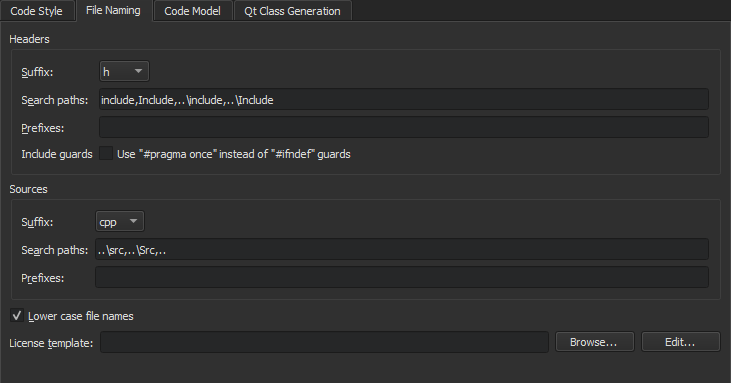

Creating Projects
Creating a project enables you to:
- Group files together
- Add custom build steps
- Include forms and resource files
- Specify settings for running applications
Setting up a new project in Qt Creator is aided by a wizard that guides you step-by-step through the project creation process. The wizards prompt you to enter the settings needed for that particular type of project and create the necessary files for you. You can add your own custom wizards to standardize the way subprojects and classes are added to a project.
Most Qt Creator project wizards enable you to choose the build system to use for building the project: qmake, CMake, or Qbs. If you are not presented with a choice, the project is set up to use qmake.
You can use wizards also to create plain C or C++ projects that use qmake, Qbs, or CMake, but do not use the Qt library.
In addition, you can import projects as generic projects that do not use qmake, Qbs, or CMake. This enables you to use Qt Creator as a code editor and to fully control the steps and commands used to build the project.
You can install tools for devices as part of Qt distributions. The kits and build and run settings for the installed device types are set up automatically. However, you might need to install and configure some additional software on the devices to be able to connect to them from the development PC.
Selecting the Build System
Most Qt Creator project wizards enable you to choose the build system to use for building the project: qmake, CMake, or Qbs. If you are not presented with a choice, the project is set up to use qmake.
qmake is a cross-platform system for build automation that helps simplify the build process for development projects across different platforms. qmake automates the generation of build configurations so that only a few lines of information are needed to create each configuration. qmake is installed and configured when you install Qt. To use one of the other supported build systems, you need to set it up.
CMake is an alternative to qmake for automating the generation of build configurations. For more information, see Setting Up CMake.
Meson Meson is an open source build system meant to be both extremely fast, and, even more importantly, as user friendly as possible. The main design point of Meson is that every second a developer spends writing or debugging build definitions is a second wasted. So is every second spent waiting for the build system to actually start compiling code. For more information, see Setting Up Meson.
Qbs is an all-in-one build tool that generates a build graph from a high-level project description (like qmake or CMake do) and executes the commands in the low-level build graph (like make does). For more information, see Setting Up Qbs.
To change the location of the project directory, and to specify settings for building and running projects, select Tools > Options > Build & Run > General. The CMake tab contains additional settings for CMake. You can find more settings for CMake in Tools > Options > Kits > CMake and for Qbs in Tools > Options > Qbs.
To specify build and run settings for different target platforms, select Projects. For more information on the options you have, see Specifying Build Settings.
Using Project Wizards
In the first step, you select a template for the project. You can filter templates (1) to view only those that apply to a particular target platform.
Next, you select a location for the project and specify settings for it.
When you have completed the steps, Qt Creator automatically generates the project with required headers, source files, user interface descriptions and project files, as defined by the wizard.
For example, if you choose to create a Qt Quick application, Qt Creator generates a QML file that you can modify in the Edit mode.
Selecting Project Type
The following table lists the wizard templates for creating projects.
| Category | Wizard Template | Purpose |
|---|---|---|
| Application (Qt for MCU) | MCU Support Application | Creates an application that uses a subset of Qt QML and Qt Quick Controls types (as supported by Qt for MCUs) that you can deploy, run, and debug on MCU boards. For more information, see Connecting MCUs. |
| Application (Qt) | Qt Widgets Application | Uses Qt Designer forms to design a Qt widget based user interface for the desktop and C++ to implement the application logic. |
| Qt Console Application | Uses a single main.cpp file. | |
| Qt Quick Application | Creates a Qt Quick 2 application project that can contain both QML and C++ code. You can build the application and deploy it to desktop, embedded, and mobile target platforms. | |
| Application (Qt for Python) | Qt for Python - Empty | Creates a Qt for Python application that contains only the main code for a QApplication. |
| Qt for Python - Window | Creates a Qt for Python application that contains an empty window. | |
| Qt for Python - Window (UI file) | Creates a Qt for Python application that contains an empty window with a widget-based UI. | |
| Qt for Python - Qt Quick Application | Creates a Python project that contains an empty Qt Quick Application. | |
| Library | C++ Library | A shared or static C++ library based on qmake. |
| Qt Quick 2 Extension Plugin | Creates a C++ plugin that makes it possible to offer extensions that can be loaded dynamically into Qt Quick 2 applications by using the QQmlEngine class. | |
| Qt Creator Plugin | Creates a Qt Creator plugin. | |
| Other Project | Qt Custom Designer Widget | Creates a custom Qt Designer widget or widget collection. |
| Qt Quick UI Prototype | Creates a Qt Quick UI project with a single QML file that contains the main view. You can preview Qt Quick 2 UI projects in the QML Scene preview tool. You do not need to build them, because they do not contain any C++ code. Use this template only if you are prototyping. You cannot create a full application by using this template. Qt Quick UI projects cannot be deployed to embedded or mobile target platforms. For those platforms, create a Qt Quick application instead. | |
| Auto Test Project | Creates a project with boilerplate code for a Qt or Google test. For more information, see Creating Tests. | |
| Subdirs Project | Creates a subproject that enables you to structure your qmake projects as a tree hierarchy. | |
| Empty qmake Project | Creates an empty qmake project that is based on qmake but does not use any default classes. | |
| Code Snippet | Creates a qmake project from a code snippet. When fixing bug reports that contain a code snippet, you can place the code snippet into a project to compile and check it. | |
| Non-Qt Project | Plain C Application | Creates a plain C application that uses qmake, Qbs, or CMake but does not use the Qt library. |
| Plain C++ Application | Creates a plain C++ application that uses qmake, Qbs, or CMake but does not use the Qt library. | |
| Nim Application (experimental) | Creates a Nim application that uses Nimble, but does not use the Qt library. For more information, see Setting Up Nimble. | |
| Nimble Application (experimental) | Creates a Nimble application that uses Nimble, but does not use the Qt library. For more information, see Setting Up Nimble. | |
| Import Project | Project from version control | Imports a project from a supported version control system, such as Bazaar, CVS, Git, Mercurial, or Subversion. For more information on how version control systems are integrated in Qt Creator, see Using Version Control Systems. |
| Import as qmake or CMake Project (Limited Functionality) | Imports an existing project that does not use any of the supported build systems: qmake, Qbs, CMake, or Autotools. The template creates a project file, which enables you to use Qt Creator as a code editor and as a launcher for debugging and analysis tools. However, if you want to build the project, you might need to edit the generated project file. | |
| Import Existing Project | Imports an existing project that does not use any of the supported build systems: qmake, Qbs, CMake, or Autotools. This enables you to use Qt Creator as a code editor. |
To create a new project, select File > New File or Project and select the type of your project. The contents of the wizard dialogs depend on the project type and the kits that you select in the Kit Selection dialog. Follow the instructions of the wizard.
For examples of creating different types of projects, see Tutorials.
For more information about creating Qt Quick projects, see Creating Qt Quick Projects.
Creating Widget-Based Qt for Python Applications
Qt for Python enables you to use Qt 6 API in Python applications. You can use the PySide6 modules to gain access to individual Qt modules, such as Qt Core, Qt GUI, and Qt Widgets.
The Qt for Python Application wizards generate a .pyproject file that lists the files in the Python project and a .py file that contains some boilerplate code. In addition, the widget based UI wizard creates a .ui file that contains a Qt Designer form, and the Qt Quick Application wizard creates a .qml file that contains Qt Quick controls.
The .pyproject files are JSON-based configuration files that replace the previously used .pyqtc configuration files. You can still open and use .pyqtc files, but we recommend that you choose .pyproject files for new projects.
The Qt for Python - Window (UI file) wizard enables you to create a Python project that contains the source file for a class. Specify the PySide version, class name, base class, and and source file for the class.
The wizard adds the imports to the source file to provide access to the QApplication, the base class you selected in the Qt Widgets module, and Qt UI tools:
import os from pathlib import Path import sys from PySide6.QtWidgets import QApplication, QWidget from PySide6.QtCore import QFile from PySide6.QtUiTools import QUiLoader
The wizard also adds a main class with the specified name that inherits from the specified base class:
class Widget(QWidget):
def __init__(self):
super(Widget, self).__init__()
self.load_ui()
...
The following lines in the main class load the generated Python class from the UI file:
def load_ui(self):
loader = QUiLoader()
path = os.fspath(Path(__file__).resolve().parent / "form.ui")
ui_file = QFile(path)
ui_file.open(QFile.ReadOnly)
loader.load(ui_file, self)
ui_file.close()
Next, the wizard adds a main function, where it creates a QApplication instance. As Qt can receive arguments from the command line, you can pass any arguments to the QApplication object. Usually, you do not need to pass any arguments, and you can use the following approach:
if __name__ == "__main__":
app = QApplication([])
Next, the wizard instantiates the MainWindow class and shows it:
widget = Widget() widget.show() ...
Finally, the wizard calls the app.exec_() method to enter the Qt main loop and start executing the Qt code:
sys.exit(app.exec_())
You can now modify the boilerplate code in the Edit mode to develop your Python application. Select REPL on the toolbar to start the Python interactive shell. To start the shell and import the current file as a module, select select REPL Import File. To also import all functions from the file, select REPL Import *.
Open the .ui file in the Design mode to create a widget-based UI in Qt Designer.
The Window wizard adds similar code to the source file, without the UI bits.
The Empty wizard adds similar code to the source file, but it does not add any classes, so you need to add and instantiate them yourself.
For more information about the Qt for Python - Qt Quick Application - Empty wizard, see Creating Qt Quick Based Python Applications.
For examples of creating Qt for Python applications, see Qt for Python Examples and Tutorials.
Adding Files to Projects
You can use wizards also to add individual files to your projects. The following table lists the wizard templates for creating files.
| Category | Wizard Template | Purpose |
|---|---|---|
| C/C++ | C++ Class | C++ header and source file for a new class that you can add to a C++ project. |
| C/C++ Source File | C++ source file that you can add to a C++ project. | |
| C/C++ Header File | C++ header file that you can add to a C++ project. | |
| Modeling | State Chart | State Chart XML (SCXML) file that contains boilerplate code for state machines. You can use the classes in the Qt SCXML module to embed state machines created from the files in Qt applications. |
| Model | Universal Modeling Language (UML) style model with a structured diagram. However, the model editor uses a variant of UML and provides only a subset of properties for specifying the appearance of model elements. For more information, see Modeling. | |
| Scratch Model | Scratch model using a temporary file. | |
| Qt | Qt Item Model | Source and header files that you can use to create classes derived from QAbstractItemModel, QAbstractTableModel, or QAbstractListModel. |
| Qt Designer Form Class | Qt Designer form and a matching class for implementing a UI based on Qt widgets. | |
| Qt Designer Form | Qt Designer form for Qt widget based projects. This is useful if you already have an existing class for the UI logic. | |
| Qt Resource File | Resource file for storing binary files in the application executable. | |
| QML File (Qt Quick 2) | QML file that imports Qt Quick 2.0 for use in Qt Quick projects. | |
| Qt Quick UI File | UI file (.ui.qml) and the corresponding implementation file (.qml) for use in Qt Quick projects. | |
| JS File | JavaScript file that you can use to write the application logic in Qt Quick projects. | |
| GLSL | Fragment Shader (OpenGL/ES 2.0) | Fragment shader that generates the final pixel colors for triangles, points, and lines rendered with OpenGL. You can use it in both Qt Quick projects and Qt widget based projects. |
| Vertex Shader (OpenGL/ES 2.0) | Vertex shader that transforms the positions, normals, and texture coordinates of triangles, points, and lines rendered with OpenGL. You can use it in both Qt Quick projects and Qt widget based projects. | |
| Fragment Shader (Desktop OpenGL) | Fragment shader for use in both Qt Quick projects and Qt widget based projects. | |
| Vertex Shader (Desktop OpenGL) | Vertex shader for use in both Qt Quick projects and Qt widget based projects. | |
| General | Empty File | Empty file that you can save with any filename extensio. |
| Scratch Buffer | Scratch buffer that uses temporary files. You can create this type of files for temporarily storing information that you do not intend to save | |
| Java | Java File | Java class files that you can use to create Java classes. |
| Python | Python Class | Python class file. |
| Python File | Python script file using UTF-8 encoding. | |
| Nim (experimental) | Nim Script File | Empty Nim script file using UTF-8 encoding. |
| Nim File | Empty Nim source file using UTF-8 encoding. |
Creating C++ Classes
The C++ Class Wizard allows you to create a C++ header and source file for a new class that you can add to a C++ project. Specify the class name, base class, and header and source files for the class.
The wizard supports namespaces. To use a namespace, enter a qualified class name in the Class name field. For example: MyNamespace::MySubNamespace::MyClass. The wizard suggests existing namespaces and class names as you type.

The names of the header and source file are based on the class name. To change the default suffix of a file, select Tools > Options > C++ > File Naming.

In the License template field, you can use predefined wizard variables to specify the path and filename of the license to use in the source and header files.
You can create your own project and class wizards. For more information, see Adding New Custom Wizards.
Creating Resource Files
Qt Creator supports the Qt Resource System, which is a platform-independent mechanism for storing files in the application's executable.
The wizard creates a resource collection file (.qrc) that you can manage in the resource editor.
Select Add Files to locate and add individual files.
To list the folders and files in ascending alphabetic order in the source tree, select Sort Alphabetically in the context menu.
By default, resources are accessible in the application under the same file name as they have in the source tree, with a :/ prefix, or by a URL with a qrc scheme. To specify a path prefix for all files in the .qrc file, select Add Prefix and enter the prefix in the Prefix field.
Some resources need to change based on the user's locale, such as translation files or icons. You can specify a locale in the Language field.
Select Remove to remove the selected file from the resource collection. In the Remove File dialog, select the Delete file permanently check box to remove the file from the file system. To remove files that cannot be found in the file system, select Remove Missing Files.
The above functions are also available in the context menu in the Projects view.
Creating OpenGL Fragment and Vertex Shaders
Qt provides support for integration with OpenGL implementations on all platforms, which allows you to display hardware accelerated 3D graphics alongside a more conventional user interface. For more information, see Qt GUI.
You can use the QOpenGLShader class to compile OpenGL shaders written in the OpenGL Shading Language (GLSL) and in the OpenGL/ES Shading Language (GLSL/ES). QOpenGLShader and QOpenGLShaderProgram shelter you from the details of compiling and linking vertex and fragment shaders.
You can use Qt Creator code editor to write fragment and vertex shaders in GLSL or GLSL/ES. The code editor provides syntax highlighting and code completion for the files.
Displaying Additional File Types in Projects View
Qt Creator determines whether to display files from the project folder in the Projects view depending on the file type (.pro, .pri, .cpp, .h, .qrc, and so on). To display other types of files, edit the project file. Add filenames as values of the DISTFILES variable. You can also use wildcards.
For example, the following code specifies that text files are displayed in the Projects view:
DISTFILES += *.txt
This also makes the files available in the Locator.
Adding Subprojects to Projects
In addition to Qt libraries, you can link your application to other libraries, such as system libraries or your own libraries. Further, your own libraries might link to other libraries. To be able to compile your project, you must add the libraries to your project. This also enables code completion and syntax highlighting for the libraries. The procedure of adding a library to a project depends on the build system that you use.
When you create a new project, you can add it to another project as a subproject in the Project Management dialog. However, the root project must specify that qmake uses the subdirs template to build the project.
To create a root project, select File > New File or Project > Other Project > Subdirs Project > Choose.
On the Summary page, select Finish & Add Subproject to create the root project and to add another project, such as a C++ library.
The wizard creates a project file (.pro) that defines a subdirs template and the subproject that you add as a value of the SUBDIRS variable. It also adds all the necessary files for the subproject.
To create more subprojects, right-click the project name in the Projects view to open the context menu, and select New Subproject. Follow the steps in the New Subproject wizard to create a subproject.

To add an existing project as a subproject, select Add Existing Projects in the context menu. In the file browser dialog, locate your subproject.
To remove subprojects, right-click the project name in the Projects view, and select Remove Subproject in the context menu.
To specify dependencies, use the Add Library wizard. For more information, see Adding Libraries to Projects.
Binding Keyboard Shortcuts to Wizards
If you use a wizard regularly, you can bind a custom keyboard shortcut to it. Triggering this keyboard shortcut will directly open the wizard without the need to navigate to File > New File or Project.
Keyboard shortcuts for wizards can be set in Tools > Options > Environment > Keyboard > Wizard. All wizard actions start with Impl there.